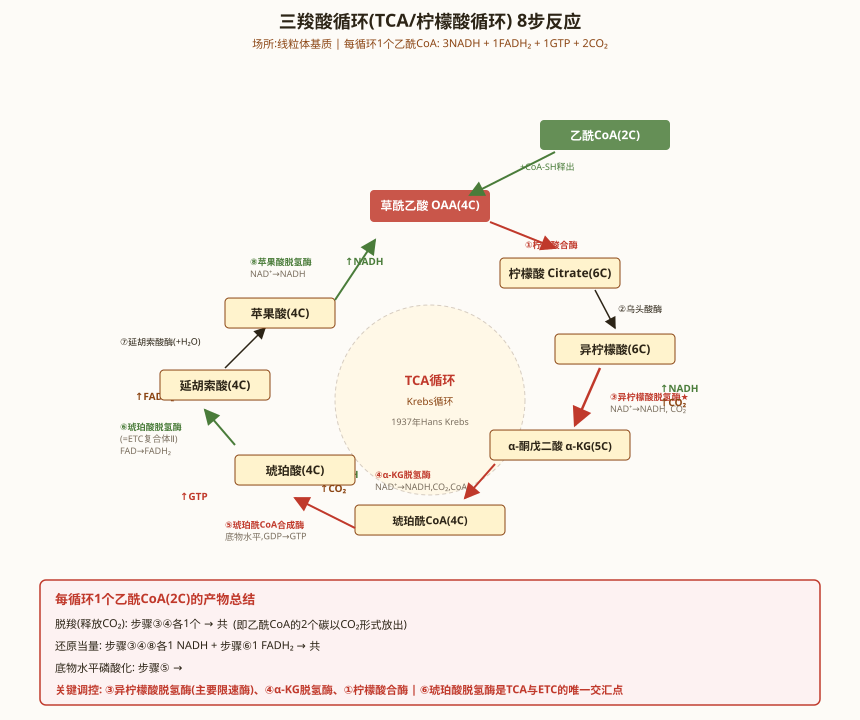

细胞呼吸 · 三羧酸循环与氧化磷酸化
一、丙酮酸脱氢酶复合体（PDH Complex）
丙酮酸脱氢酶复合体（PDH）是连接糖酵解和TCA循环的关键酶复合体，位于线粒体基质。催化丙酮酸的不可逆氧化脱羧：Pyruvate + CoA-SH + NAD⁺ → Acetyl-CoA + CO₂ + NADH + H⁺。
PDH复合体是巨大的多酶复合体（分子量~10⁷ Da，在细菌中甚至有60个E2亚基形成五角十二面体核心），由三种催化酶和五种辅酶组成：
- E1：丙酮酸脱氢酶（Pyruvate Dehydrogenase）——辅酶：硫胺素焦磷酸（TPP）（维生素B₁衍生物）。催化丙酮酸脱羧，生成羟乙基-TPP+CO₂。
- E2：二氢硫辛酰转乙酰酶（Dihydrolipoyl Transacetylase）——辅酶：硫辛酸（Lipoic Acid）和辅酶A（CoA-SH）（泛酸/维生素B₅衍生物）。E2构成复合体的核心，硫辛酸通过其"摆动臂"（swinging arm，~14Å长的赖氨酸-硫辛酰胺臂）将乙酰基从E1转移到CoA。
- E3：二氢硫辛酰脱氢酶（Dihydrolipoyl Dehydrogenase）——辅酶：FAD（核黄素/维生素B₂衍生物）和NAD⁺（烟酸/维生素B₃衍生物）。将还原型硫辛酸重新氧化。
PDH的调控：PDH活性受可逆磷酸化调控：PDH激酶（PDK）磷酸化E1→失活（被ATP/NADH/乙酰CoA激活）；PDH磷酸酶（PDP）去磷酸化→激活（被Ca²⁺和胰岛素激活）。
二、三羧酸循环（TCA Cycle / Krebs Cycle）
三羧酸循环由Hans Krebs于1937年发现（获1953年诺贝尔奖），在线粒体基质中进行。TCA循环是两用代谢途径（amphibolic pathway）——既是分解代谢的核心（乙酰CoA彻底氧化），也是合成代谢的枢纽（提供氨基酸、卟啉等前体）。
总反应式（每轮）：Acetyl-CoA + 3NAD⁺ + FAD + GDP + Pi + 2H₂O → 2CO₂ + 3NADH + FADH₂ + GTP + CoA-SH + 3H⁺
每分子葡萄糖经糖酵解（2丙酮酸→2乙酰CoA）+ TCA循环（2轮），共产生：6CO₂ + 10NADH + 2FADH₂ + 2GTP + 4ATP（糖酵解底物水平磷酸化）。
TCA循环8步反应详解：
第1步：乙酰CoA + 草酰乙酸 → 柠檬酸 酶：柠檬酸合酶（Citrate Synthase）。ΔG°'=-31.4kJ/mol（不可逆，调控点）。受ATP、NADH、琥珀酰CoA抑制。机制：乙酰CoA的甲基去质子化→烯醇式中间体攻击草酰乙酸的羰基碳→柠檬酰CoA→水解→柠檬酸+CoA。
第2步：柠檬酸 → 异柠檬酸 酶：顺乌头酸酶（Aconitase），含[4Fe-4S]簇。经顺乌头酸中间体，脱水→重新水化。氟代乙酸→氟代柠檬酸→不可逆抑制顺乌头酸酶→阻断TCA循环。
第3步：异柠檬酸 → α-酮戊二酸 酶：异柠檬酸脱氢酶（IDH）。ΔG°'=-8.4kJ/mol（不可逆，调控点）。第一次氧化脱羧，产生1NADH+1CO₂。受ATP/NADH抑制，被ADP/Ca²⁺激活。
第4步：α-酮戊二酸 → 琥珀酰CoA 酶：α-酮戊二酸脱氢酶复合体（α-KGDH）。第二次氧化脱羧，产生1NADH+1CO₂。与PDH高度同源（E1/E2/E3结构相同），是TCA循环的第二个调控点。
第5步：琥珀酰CoA → 琥珀酸 酶：琥珀酰CoA合成酶（Succinyl-CoA Synthetase）。TCA循环中唯一的一次底物水平磷酸化：琥珀酰CoA的高能硫酯键偶联GDP+GTP（动物）或ADP+ATP（植物/细菌）。
第6步：琥珀酸 → 延胡索酸 酶：琥珀酸脱氢酶（SDH）。产生1FADH₂。SDH是TCA循环中唯一嵌入线粒体内膜的酶，也是ETC的复合体II。被丙二酸（malonate）竞争性抑制——最经典的竞争性抑制范例。
第7步：延胡索酸 → 苹果酸 酶：延胡索酸酶（Fumarase）。水化反应：在延胡索酸的反式双键上加H₂O，生成L-苹果酸（立体专一性）。
第8步：苹果酸 → 草酰乙酸 酶：苹果酸脱氢酶（MDH）。产生1NADH。ΔG°'=+29.7kJ/mol（热力学不利），但细胞内草酰乙酸浓度极低（~10⁻⁶M），被柠檬酸合酶快速消耗，使反应正向进行——"产物浓度拉动热力学不利反应"的经典案例。
每轮TCA循环产物：3NADH+1FADH₂+1GTP+2CO₂。每分子葡萄糖（2轮）：6NADH+2FADH₂+2GTP+4CO₂。

三、TCA循环8步反应总表
| 步 | 反应 | 酶 | 辅因子 | 产物 | ΔG°'(kJ/mol) |
|---|---|---|---|---|---|
| 1 | OAA+Ac-CoA→Citrate | 柠檬酸合酶 | 无 | -- | -31.4 |
| 2 | Citrate→Isocitrate | 顺乌头酸酶 | [4Fe-4S] | -- | ~+6.7 |
| 3 | Isocitrate→α-KG | 异柠檬酸脱氢酶 | NAD⁺,Mn²⁺/Mg²⁺ | NADH+CO₂ | -8.4 |
| 4 | α-KG→Succinyl-CoA | α-KGDH复合体 | TPP,硫辛酸,CoA,FAD,NAD⁺ | NADH+CO₂ | -30.1 |
| 5 | Succinyl-CoA→Succinate | 琥珀酰CoA合成酶 | GDP/GTP | GTP | -3.3 |
| 6 | Succinate→Fumarate | SDH（复合体II） | FAD,[Fe-S] | FADH₂ | ~0 |
| 7 | Fumarate→Malate | 延胡索酸酶 | 无 | -- | -3.8 |
| 8 | Malate→OAA | 苹果酸脱氢酶 | NAD⁺ | NADH | +29.7 |
四、电子传递链（ETC）
电子传递链位于线粒体内膜，由四个多亚基复合体（I-IV）和两个移动电子载体（辅酶Q/泛醌、细胞色素c）组成。NADH和FADH₂的电子沿链传递，逐级释放的自由能用于将H⁺从基质泵到膜间隙。
复合体I：NADH-辅酶Q氧化还原酶：哺乳动物含45个亚基，分子量~1MDa。辅基：FMN+8~9个铁硫簇。催化NADH+H⁺+Q→NAD⁺+QH₂，泵出4H⁺。被鱼藤酮（rotenone）和巴比妥类药物抑制。
复合体II：琥珀酸-辅酶Q氧化还原酶：即SDH（TCA循环第6步）。催化琥珀酸+Q→延胡索酸+QH₂。不泵出H⁺，因此FADH₂产生的ATP比NADH少。
复合体III：辅酶Q-细胞色素c氧化还原酶（Cyt bc₁）：含细胞色素b（b_H/b_L）、Rieske铁硫蛋白、细胞色素c₁。通过Q循环机制，每传递2个电子将4H⁺泵出（其中2个来自基质）。被抗霉素A（antimycin A）抑制。
复合体IV：细胞色素c氧化酶（Cyt aa₃）：含细胞色素a和a₃、Cu_A和Cu_B。催化4Cytc(red)+8H⁺_N+O₂→4Cytc(ox)+4H₂O+4H⁺_P。每传递4个电子泵出2H⁺。被CN⁻、CO、N₃⁻（叠氮化物）抑制。
化学渗透假说（Chemiosmotic Hypothesis）——Peter Mitchell于1961年提出，获1978年诺贝尔化学奖。核心内容：
- 电子传递链将H⁺从线粒体基质泵到膜间隙，建立跨内膜的质子电化学梯度（质子动力势，Δp）。
- Δp = Δψ（膜电位，约-160mV，基质侧为负） + ΔpH（pH梯度，膜间隙比基质低约0.5-1.0pH单位）。Δp约180-220mV。
- 质子经ATP合酶（F₀F₁-ATPase）流回基质，释放的自由能驱动ATP合成。这是氧化磷酸化的偶联机制。
- 解偶联剂：DNP（2,4-二硝基苯酚）——脂溶性弱酸，携带H⁺穿过内膜，消除质子梯度。→氧化（电子传递）与磷酸化（ATP合成）脱偶联→能量以热散发。UCP1（thermogenin/解偶联蛋白1）——棕色脂肪组织中线粒体内膜的天然解偶联蛋白，在新生儿和冬眠动物中产热。
ATP合酶（F₀F₁-ATPase）——分子量~540kDa，由两个旋转马达组成：
- F₀部分（质子通道）：位于内膜中，由a亚基+b₂+c₁₀₋₁₄环组成。c亚基环上每个c亚基的Asp61残基被质子化/去质子化，驱动c环旋转。每旋转一圈（c环的亚基数决定H⁺/ATP比值），c环转1圈→γ亚基转1圈→F₁合成3个ATP。哺乳动物c₈环→每ATP需8/3≈2.7H⁺（加上1H⁺转运Pi，共约4H⁺）。
- F₁部分（催化头）：α₃β₃γδε，位于基质侧。通过结合变化机制（Binding Change Mechanism）（Paul Boyer，1997年诺贝尔化学奖）合成ATP：γ亚基的不对称旋转使三个β亚基依次经历三种构象：Open（释放ATP）→Loose（结合ADP+Pi）→Tight（催化ATP合成）。
- 旋转催化：γ亚基的旋转被直接观察到（1997年，Noji等人——荧光标记的肌动蛋白丝附着在γ亚基上，ATP水解时可见旋转）。


五、氧化磷酸化抑制剂与解偶联剂
| 类型 | 药物/毒物 | 作用靶点 | 效应 |
|---|---|---|---|
| ETC抑制剂 | 鱼藤酮 | 复合体I | 阻断NADH→Q，电子传递停止 |
| ETC抑制剂 | 抗霉素A | 复合体III（Q_i位点） | 阻断Q循环 |
| ETC抑制剂 | CN⁻, CO, N₃⁻ | 复合体IV（Cyt a₃） | 阻断O₂还原，组织中毒性缺氧 |
| ATP合酶抑制剂 | 寡霉素 | F₀质子通道 | 阻断ATP合成，呼吸控制 |
| 解偶联剂 | DNP, FCCP | 内膜（质子载体） | 消除质子梯度，产热 |
| 解偶联蛋白 | UCP1 | 棕色脂肪线粒体内膜 | 生理性产热 |
| ATP/ADP转位酶抑制剂 | 苍术苷（atractyloside） | ANT（腺嘌呤核苷酸转位酶） | 阻断ATP出/ADP进线粒体 |
六、本节核心总结
七、TCA循环的回补反应与调控
回补反应（Anaplerotic Reactions）：补充TCA循环中被消耗的中间产物（如OAA用于糖异生、α-KG用于氨基酸合成等）。
- 丙酮酸羧化酶（Pyruvate Carboxylase, PC）：Pyruvate+CO₂+ATP→OAA+ADP+Pi。位于线粒体基质，需要生物素（维生素B₇）作为辅酶。PC是糖异生的关键酶之一。被乙酰CoA激活——乙酰CoA积累→OAA不足→PC激活→补充OAA。
- PEP羧激酶（PEPCK）：OAA+GTP→PEP+GDP+CO₂。糖异生途径的关键酶，连接TCA和糖异生。
- 苹果酸酶（Malic Enzyme）：Pyruvate+CO₂+NADPH→Malate+NADP⁺。逆向反应产生丙酮酸和NADPH（用于脂肪酸合成）。
- 谷氨酸脱氢酶（GDH）：α-KG+NH₄⁺+NAD(P)H↔Glu+NAD(P)⁺+H₂O。连接氨基酸代谢和TCA循环。
TCA循环的全局调控：TCA循环的速率受三个因素调控：①底物供应（乙酰CoA和OAA的浓度）；②产物反馈抑制（NADH/NAD⁺比值）；③能量需求（ATP/ADP比值和Ca²⁺信号）。Ca²⁺激活三种TCA酶：PDH磷酸酶（→PDH激活）、IDH和α-KGDH。Ca²⁺作为能量需求信号，同时激活糖原分解和TCA循环。
八、氧化磷酸化的ATP产率计算与呼吸控制
ATP产率的精确计算：
- 每分子NADH经ETC：泵出10H⁺（复合体I 4H⁺+III 4H⁺+IV 2H⁺）。每分子FADH₂经ETC：泵出6H⁺（复合体II 0H⁺+III 4H⁺+IV 2H⁺）。
- ATP合酶合成1ATP需要约4H⁺回流（c₁₀环→10H⁺/3ATP≈3.33H⁺/ATP，加上磷酸转运体消耗1H⁺→约4H⁺/ATP）。
- 因此：NADH → 10H⁺ → 10/4 ≈ 2.5 ATP；FADH₂ → 6H⁺ → 6/4 ≈ 1.5 ATP。
- 每分子葡萄糖完全氧化的ATP总产率：糖酵解（底物水平）2ATP + 2NADH（胞质，经苹果酸-天冬氨酸穿梭→2.5×2=5ATP，或经磷酸甘油穿梭→1.5×2=3ATP）+ PDH（2NADH→5ATP）+ TCA（2GTP+6NADH→15ATP+2FADH₂→3ATP）= 2+5+5+2+15+3 = ~30-32 ATP（真核）。原核无穿梭损失→~36-38 ATP。
呼吸控制（Respiratory Control）：
- ADP浓度是线粒体呼吸速率的主要调节因子。ADP增加→ATP合酶加速→质子梯度消耗→电子传递加速→NADH氧化加速→TCA循环加速→氧耗增加。ADP耗尽→ATP合酶减速→质子梯度升高→电子传递受阻→呼吸减慢。
- 呼吸控制率（RCR, Respiratory Control Ratio） = 态3呼吸（ADP充足）/ 态4呼吸（ADP耗尽后）。RCR是线粒体完整性和偶联程度的指标。高RCR（>5）→线粒体偶联良好；低RCR→线粒体受损或部分解偶联。
- 棕色脂肪组织中UCP1解偶联→RCR接近1→呼吸不受ADP控制→持续产热。
线粒体底物穿梭：胞质NADH不能直接进入线粒体（线粒体内膜不通透NADH），需通过穿梭系统：
- 苹果酸-天冬氨酸穿梭（Malate-Aspartate Shuttle，MAS）：在肝、心、肾中。胞质NADH→OAA→苹果酸（MDH）。苹果酸进入线粒体→OAA（线粒体MDH）→NADH。OAA→Asp→出线粒体→OAA→完成循环。每分子胞质NADH产生~2.5ATP。
- 磷酸甘油穿梭（Glycerol-3-Phosphate Shuttle）：在骨骼肌和脑中。胞质NADH→DHAP→G3P（G3P脱氢酶）。G3P被线粒体内膜外侧的G3P脱氢酶（FAD依赖）氧化→DHAP+FADH₂→电子进入CoQ池→1.5ATP。
九、线粒体疾病与氧化磷酸化
线粒体遗传学：
- 线粒体DNA（mtDNA）：环状双链，人类mtDNA~16.6kb，编码13种氧化磷酸化蛋白（复合体I的7个ND亚基、复合体III的Cyt b、复合体IV的COX I/II/III、ATP合酶的A6/A8）、22种tRNA和2种rRNA（12S和16S）。其余~1500种线粒体蛋白由核基因编码。
- 母系遗传（Maternal Inheritance）：mtDNA仅通过卵细胞质遗传（精子线粒体在受精后被降解），因此线粒体疾病呈母系遗传模式。异质性（heteroplasmy）：细胞内野生型和突变型mtDNA共存，表型取决于突变mtDNA的比例（阈值效应）。
经典线粒体疾病：
- Leber遗传性视神经病变（LHON）：mtDNA点突变（最常见m.11778G>A，ND4基因）→复合体I功能障碍→视网膜神经节细胞变性→急性/亚急性中心视力丧失。典型的母系遗传。
- MELAS综合征（线粒体脑肌病伴乳酸酸中毒和卒中样发作）：最常见m.3243A>G突变（tRNA^Leu(UUR)基因）→线粒体翻译障碍→多系统受累。
- MERRF综合征（肌阵挛性癫痫伴破碎红纤维）：m.8344A>G突变（tRNA^Lys基因）。
- Kearns-Sayre综合征（KSS）：mtDNA大片段缺失（~5kb），散发性（非母系遗传——缺失发生在卵子发生或早期发育中）。
活性氧（ROS）与线粒体衰老：ETC是细胞ROS的主要来源（复合体I和III的电子漏→O₂→O₂·⁻）。线粒体衰老理论（Harman's Free Radical Theory of Aging）：mtDNA靠近ROS产生位点且修复能力有限→mtDNA突变积累→氧化磷酸化功能下降→更多ROS产生→恶性循环→衰老。
八、线粒体疾病与氧化应激
线粒体疾病（Mitochondrial Diseases）：
- 母系遗传：线粒体DNA（mtDNA，16.6kb，环状，37个基因：13个氧化磷酸化蛋白亚基+22个tRNA+2个rRNA）为母系遗传（精子mtDNA在受精后被降解）。异质性（heteroplasmy）：同一细胞内野生型和突变型mtDNA共存，突变型比例超过阈值才致病。
- Leber遗传性视神经病变（LHON）：mtDNA Complex I亚基突变（常见m.11778G>A，ND4基因）→视神经节细胞凋亡→急性/亚急性双眼视力丧失。多见于青年男性（不完全外显率）。
- MELAS综合征：线粒体脑肌病伴乳酸酸中毒和卒中样发作。mtDNA tRNA-Leu(UUR)基因m.3243A>G突变最常见→Complex I和IV缺陷。临床表现：卒中样发作、癫痫、痴呆、乳酸酸中毒、身材矮小。
- MERRF综合征：肌阵挛癫痫伴破碎红纤维（RRF）。mtDNA tRNA-Lys基因m.8344A>G突变。破碎红纤维→修饰的Gomori三色染色下肌纤维膜下异常线粒体聚集。
- Kearns-Sayre综合征（KSS）：mtDNA大片段缺失（~5kb）。三联征：20岁前发病+进行性眼外肌麻痹（PEO）+色素性视网膜病变。可伴心脏传导阻滞。
活性氧（ROS）与抗氧化防御：
- 线粒体是ROS主要来源：ETC中~1-2%电子漏出→O₂单电子还原→超氧阴离子（O₂⁻·）。Complex I和III是主要漏出位点。O₂⁻·→SOD（超氧化物歧化酶）→H₂O₂→过氧化氢酶/谷胱甘肽过氧化物酶→H₂O。H₂O₂+Fe²⁺→Fenton反应→·OH（羟自由基，最活泼的ROS）。
- 抗氧化酶系统：MnSOD（线粒体基质，SOD2）、CuZnSOD（胞质，SOD1）、过氧化氢酶（过氧化物酶体）、GPx（谷胱甘肽过氧化物酶，含硒代半胱氨酸）、PRDX（过氧化物氧还蛋白）。
- 线粒体自噬（Mitophagy）：PINK1/Parkin通路→损伤线粒体膜电位下降→PINK1在线粒体外膜积累→招募Parkin（E3泛素连接酶）→泛素化线粒体外膜蛋白→自噬受体（p62/OPTN）识别→自噬体包裹→溶酶体降解。PINK1/Parkin突变→常染色体隐性遗传早发性帕金森病。
必背考点汇总
- PDH复合体：E1(TPP)/E2(硫辛酸,CoA)/E3(FAD,NAD⁺)，磷酸化调控，五种辅酶
- TCA循环8步：酶名、辅因子、ΔG°'、产物，3个不可逆（柠檬酸合酶/IDH/α-KGDH）
- SDH=复合体II：唯一内膜上的TCA酶，丙二酸竞争性抑制
- ETC复合体I-IV：鱼藤酮(I)→抗霉素A(III)→CN⁻/CO(IV)
- 化学渗透假说：Mitchell 1961，Δp=Δψ+ΔpH
- ATP合酶：F₀F₁，旋转催化，结合变化机制（O→L→T）
- P/O比：NADH≈2.5，FADH₂≈1.5
- 解偶联剂：DNP、UCP1（棕色脂肪产热）
- 抑制部位：鱼藤酮(I)、抗霉素A(III)、CN⁻(IV)、寡霉素(F₀)、苍术苷(ANT)
高中教材衔接 · 课标对应
【课标对应内容】人教版必修1第5章第3节"细胞呼吸的原理和应用"——三羧酸循环发生在线粒体基质中，是有氧呼吸第二阶段，将丙酮酸彻底分解为CO2并产生大量[H]（NADH、FADH2）；电子传递链发生在线粒体内膜上，是有氧呼吸第三阶段，[H]与O2结合生成水，释放大量能量合成ATP。高中阶段不要求学生记忆8步反应细节和具体酶。选择性必修1第2章"人体的稳态与调节"中关于"能量供应"的部分会再次涉及三大营养物质的代谢去向。
2025 / 2026 联赛 · 初赛真题链接
本章重难点深度解析
重难点 1：三羧酸循环的8步反应
- TCA循环定位与计量：线粒体基质中进行。每分子乙酰CoA完全氧化为2 CO2 + 3 NADH + 1 FADH2 + 1 GTP。1个葡萄糖产生2乙酰CoA → 6 NADH + 2 FADH2 + 2 GTP（注意：糖酵解产生的2 NADH是胞质的，需穿梭进线粒体）。
- 8步反应详情：
①乙酰CoA + OAA + H2O → 柠檬酸 + CoA-SH（柠檬酸合酶，CS，限速之一，ΔG°大幅负值，不可逆）；
②柠檬酸 ↔ 异柠檬酸（乌头酸酶，ACON，可逆，顺式乌头酸为中间体）；
③异柠檬酸 + NAD+ → α-酮戊二酸 + CO2 + NADH（异柠檬酸脱氢酶，IDH，关键限速步骤，产生第一个NADH和CO2，受ATP/NADH反馈抑制，被ADP/异柠檬酸/Ca2+激活）；
④α-酮戊二酸 + NAD+ + CoA → 琥珀酰CoA + CO2 + NADH（α-酮戊二酸脱氢酶复合体，OGDC，第二个限速步骤，机制类似丙酮酸脱氢酶，5种辅因子TPP/硫辛酸/FAD/NAD+/CoA）；
⑤琥珀酰CoA + Pi + GDP ↔ 琥珀酸 + GTP + CoA（琥珀酰CoA合成酶，SCS/琥珀酰CoA合酶，底物水平磷酸化，高能硫酯键水解驱动GDP→GTP）；
⑥琥珀酸 + FAD ↔ 延胡索酸 + FADH2（琥珀酸脱氢酶，SDH，唯一一个嵌入线粒体内膜的TCA酶，也是电子传递链复合体II，产生FADH2，丙二酸是竞争性抑制剂）；
⑦延胡索酸 + H2O → 苹果酸（延胡索酸酶/延胡索酸水合酶，FH，反式双键加水，可逆）；
⑧苹果酸 + NAD+ ↔ OAA + NADH + H+（苹果酸脱氢酶，MDH，可逆，虽然OAA不稳定但不断被柠檬酸合酶拉走）。 - 关键记忆：2次脱羧（异柠檬酸、α-酮戊二酸）+ 3次NADH + 1次FADH2 + 1次GTP。
重难点 2：电子传递链与化学渗透
- 4个复合体（按电子流向）：
复合体I（NADH-泛醌氧化还原酶，NADH脱氢酶）：NADH + H+ + Q → NAD+ + QH2（泛醇）。每对电子泵出4 H+，含FMN辅基和多个铁硫簇。鱼藤酮（rotenone）抑制。
复合体II（琥珀酸-泛醌氧化还原酶，SDH）：琥珀酸 + Q → 延胡索酸 + QH2。不泵H+，仅将电子从FADH2传递到CoQ。萎锈灵（carboxin）抑制。
复合体III（泛醌-细胞色素c氧化还原酶，细胞色素bc1复合体）：QH2 + 2 Cyt c(ox) → Q + 2 Cyt c(red) + 2H+。Q循环（Q cycle）实现净泵出4 H+/2 e-。抗霉素A（antimycin A）抑制，黏噻唑（myxothiazol）抑制Qo位点。
复合体IV（细胞色素c氧化酶，Cyt c oxidase）：4 Cyt c(red) + O2 + 8H+(基质) → 4 Cyt c(ox) + 2 H2O + 4H+(膜间隙)。净泵出4 H+/O2，含Cu_A、Cu_B、血红素a/a3。氰化物（CN-）、一氧化碳（CO）、叠氮化物（N3-）抑制。 - 化学渗透假说（Peter Mitchell 1961，1978年获诺贝尔奖）：
核心思想：电子传递释放的能量不直接用于合成ATP，而是将H+从线粒体基质泵到膜间隙，建立跨膜电化学质子梯度（ΔpH ~1.4，ΔΨ ~-160 mV，总质子动力势 PMF = Δp ~200 mV），然后质子通过ATP合酶F0通道顺梯度回流时驱动ATP合成。
实验证据：①Racker和Stoeckenius（1974）将嗜盐菌的bacteriorhodopsin与牛心线粒体F0F1重组到脂质体上，光照驱动H+泵入，然后F1催化ADP+Pi合成ATP——直接证明H+梯度足以驱动ATP合成；②解偶联剂DNP使H+通过其他通道回流，耗散梯度，ATP合成停止但电子传递继续；③ATP合酶的F0部分作为H+通道，单独存在时介导H+回流但不合成ATP。
重难点 3：ATP合酶的旋转催化机制
- 结构（F0F1复合体）：
F0（线粒体内膜中）：a亚基 + b2亚基 + c9-12环（c-ring），形成质子通道。质子从膜间隙进入，依次结合c环亚基的Asp残基，旋转c环。
F1（朝向基质）：α3β3γδε亚基。"α3β3"形成六聚体（3个α和3个β交替排列），β亚基有3个构象（Open/Loose/Tight，对应ADP+Pi结合、ATP结合、ATP合成与释放），γ亚基穿过α3β3六聚体中央，像"转轴"一样驱动β亚基构象变化。
外周柄（peripheral stalk）：b2δ亚基，将F0固定在膜上并稳定γ轴。 - 结合变化机制（Boyer 1997 Nobel）：
γ亚基每旋转120°，β亚基的构象从Open（无底物）→ Loose（结合ADP+Pi）→ Tight（合成ATP）→ Open（释放ATP）。3个β亚基在不同时刻处于不同构象，使ATP合成"持续进行"。每转360°合成3个ATP。 - 质子与ATP的化学计量：
哺乳动物线粒体：c环含8个c亚基 → 8 H+/转 → 8/3 ≈ 2.7 H+/ATP。
真核生物线粒体：~3 H+/ATP + 1 H+/Pi转运（H+/Pi同向转运蛋白将Pi + H+从膜间隙运到基质）= ~4 H+/ATP。
细菌F0F1：c环可变（V型10个、H型14个等）→ 计量不同。 - F型 vs V型 vs P型泵：
F型（ATP合酶）：正常情况下利用H+梯度合成ATP，反向时水解ATP泵H+。
V型（V-ATPase）：仅水解ATP泵H+，不合成ATP，定位溶酶体/内体/液泡膜。
P型：单亚基，含磷酸化中间体。
重难点 4：P/O比与ATP能量核算
- P/O比定义：每对电子通过电子传递链传递给O2时合成ATP的分子数。
经典P/O比（旧值）：NADH = 3 ATP，FADH2 = 2 ATP。
现代P/O比（修订值）：NADH = 2.5 ATP，FADH2 = 1.5 ATP。
修订原因：①H+/ATP从3增至4（考虑Pi/H+同向转运消耗1 H+）；②质子动力势消耗部分H+用于其他转运（如Pi/ATP交换、Ca2+等）。 - 1分子葡萄糖完全氧化的ATP产量：
糖酵解：净产2 ATP + 2 NADH（胞质）；
丙酮酸脱氢酶：2 NADH（线粒体基质）= 2 × 2.5 = 5 ATP；
TCA循环：2 × (3 NADH + 1 FADH2 + 1 GTP) = 6 NADH + 2 FADH2 + 2 GTP = 15 + 3 + 2 = 20 ATP；
胞质2 NADH经苹果酸-天冬氨酸穿梭：2 × 2.5 = 5 ATP（心、肝、肾）；
胞质2 NADH经甘油-3-磷酸穿梭：2 × 1.5 = 3 ATP（肌肉、脑）；
总计（苹果酸-天冬氨酸穿梭）= 2 + 5 + 5 + 20 = 32 ATP（理论值）；
总计（甘油-3-磷酸穿梭）= 2 + 5 + 3 + 20 = 30 ATP（理论值）；
实际值（考虑质子漏、Pi转运损耗）：~27-30 ATP。 - 储能效率：
1 mol葡萄糖完全氧化释放能量 ΔG° = -2850 kJ/mol。
1 mol ATP水解 ΔG° = -30.5 kJ/mol。
30 mol ATP储能 = 30 × 30.5 = 915 kJ/mol。
能量转化效率 = 915/2850 ≈ 32%。
比内燃机效率（~25%）还高——线粒体是高效的"生物机器"。
重难点 5：解偶联、氧化磷酸化抑制剂与临床
- 解偶联剂（uncouplers）：
化学解偶联：①DNP（2,4-二硝基苯酚）——弱酸性，质子化的DNP穿过内膜，在基质侧释放H+，然后DNP-回膜间隙再结合H+——形成H+循环，耗散质子梯度；②FCCP（碳酰氰-p-三氟甲氧基苯腙）——作用类似DNP。
蛋白质解偶联：UCP1（解偶联蛋白1，棕色脂肪组织）：H+通过UCP1顺梯度回流，不经过ATP合酶，能量以热形式释放——非寒战产热（新生儿、成年冬眠动物）。UCP2/3在多种组织表达，与代谢调节有关。
解偶联的意义：①产热（适应性产热）；②降低ROS（活性氧）水平（部分解偶联）；③肥胖研究靶点（UCP1激活→能量消耗增加）。 - 氧化磷酸化抑制剂：
复合体I抑制剂：鱼藤酮（rotenone，植物毒素，杀虫剂）、安密妥（amytal）。
复合体II抑制剂：萎锈灵（carboxin，农药）、丙二酸（malonate，琥珀酸类似物）。
复合体III抑制剂：抗霉素A（antimycin A，鱼毒）、黏噻唑、 stigmatellin。
复合体IV抑制剂：氰化物（CN-，细胞色素a3结合）、CO（一氧化碳，结合血红素a3）、叠氮化物（N3-）、硫化氢（H2S）。
ATP合酶抑制剂：寡霉素（oligomycin，结合F0亚基c环）、DCCD（二环己基碳二亚胺）。
离子载体（ionophores）：缬氨霉素（K+载体，K+载体将K+带过内膜，交换H+、耗散ΔΨ）；尼日利亚菌素（Na+/H+交换）。 - 临床意义：
①氰化物中毒：抑制复合体IV → 细胞窒息 → 樱桃红皮肤、血液携O2但不能利用 → 解毒用亚硝酸盐（诱导MetHb）+ 硫代硫酸盐（CN-→SCN-）。
②CO中毒：结合血红素a3 → 中毒症状类似氰化物 → 解毒用高压氧（O2竞争CO结合位点）。
③二硝基苯酚（DNP）曾是1930年代减肥药，因严重副作用（含致盲、高热）已禁用。
④线粒体肌病：mtDNA突变（如LHON、MELAS）导致氧化磷酸化缺陷 → 肌无力、乳酸酸中毒。